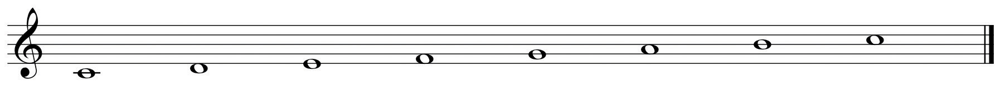
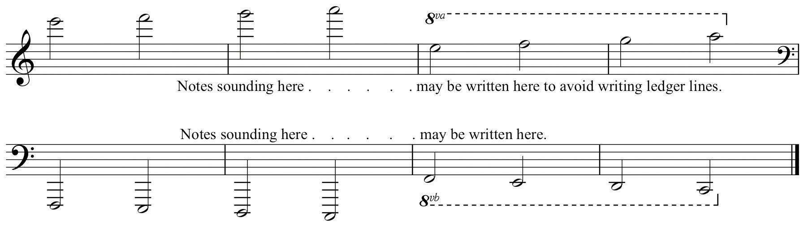
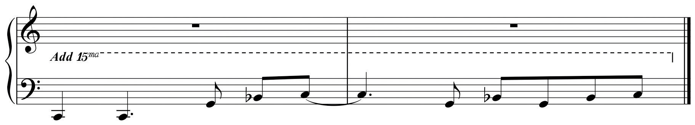
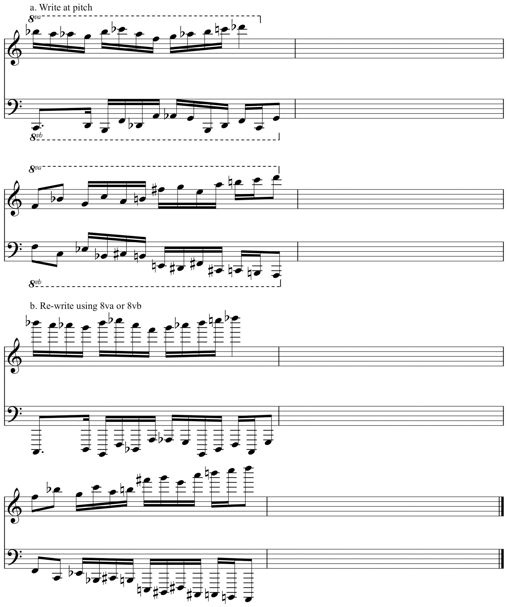

By using the Grand Staff, we can locate specific pitches from low to high. However it is necessary to assign more precise values to pitches according to their specific range in this spectrum. For this task we employ register designationsThe labeling system used to locate pitch based upon the piano keyboard..
To do this, we first separate the entire span of pitches into discrete segments labeled octaves (Italian: ottava “eight”). In this context, an octave is a segment of pitches spanning the distance from one pitch to its pitch-class counterpart above or below. Further, it is customary to speak of pitches as residing in some particular “octave.”
Figure 2.17 Octave
Using the octaveIn this context, an eight-tone species, or sequence of pitches. as a range-specific designator, pitches can be precisely located and identified by letter name as well as by register. Originally, a register designation system evolved that employed upper- and lower-case letter names. Multiple lower case letters (C, CC, CCC) denoted lower octaves while upper-case letter names followed by one or more apostrophes denoted higher octaves. While this system may still be encountered occasionally, it is gradually being abandoned in favor of a more malleable system.
In the 1970’s, the Acoustical Society of America instituted a register designation system based upon the layout of the piano keyboard. This system uses letter names to denote pitch. Each letter name is followed by a number denoting the octave within which that pitch resides. Each octave begins with the note “C” and extends to the “B” seven steps above.
There are three pitches below the lowest C (C1) on the average piano keyboard. These notes are labeled in two ways: A0, Bb0, B0, or simply A, Bb, B. So, the entire piano keyboard spans the range from A0 to C8. Figure 2.18 "Keyboard with Octave Designations" shows this entire keyboard with each octave designation labeled.
The use of register designations is coupled with, and reinforced by, the visual tool of the piano keyboard. This becomes an indispensable skill for every musician.
Often the range of a particular segment of music will be written in extremes of register, high or low. This is notated using multiple ledger lines. Often, as a notational convenience and to make for ease of reading, composers may employ symbols denoting that a passage is played an octave higher than written (8va-ottava), or an octave lower than written (8vb-ottava bassa). In order to avoid using ledger lines, the passage is written in a lower octave, then labeled above the staff if 8va, below the staff if 8vb. A bracket extends from the ottava symbol to the end of the passage that is raised or lowered.
Figure 2.19 8va, 8vb
At times composers will use the symbols 15ma and 15mb to denote that the passage is to be played two octaves higher or lower. While uncommon, this is occasionally used, especially as a notational convenience. A composer may indicate that a passage is to be performed two octaves higher or lower by including this as an instruction.
Figure 2.20 15ma
On the keyboard diagram provided, label octave designations.
On the example provided:
Figure 2.22 8va, 8vb
